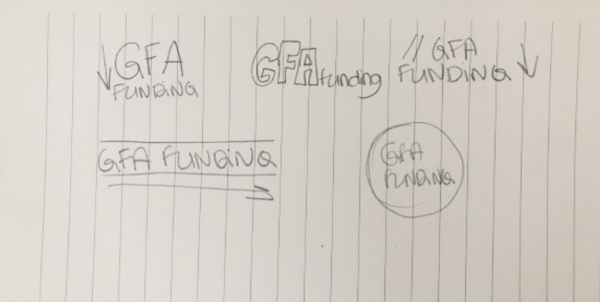
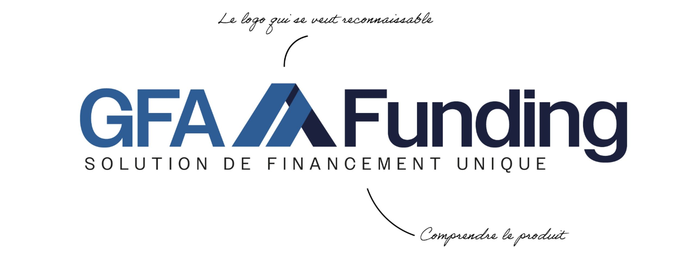

Le projet
Comme pour mes précédents projets, j'ai débuté en cherchant à comprendre ce qu'est la GFA... et il est indéniable que ce n'a pas été le sujet le plus simple que j'aie jamais abordé. Cependant, c'est précisément ce qui rend ce type de projet si captivant.
Les esquisses
J’ai commencé en griffonnant sur mon carnet différentes idées pour le logo. En y
regardant de plus près, c’est un logo plus en longueur et se lisant de gauche à droite qui paraissait le
plus cohérent. Après avoir validé avec les équipes, j’ai décidé de réfléchir plus en profondeur à ce logo.

Les couleurs
En ce qui concerne les couleurs, il y a peu de place pour l'imagination.
En effet, je suis contraint de m'appuyer sur les couleurs préexistantes de l'entité et de demeurer dans la même gamme chromatique.
Le logo
En ce qui concerne les couleurs, il y a peu de place pour l'imagination. En effet, je suis contraint de m'appuyer sur les couleurs préexistantes de l'entité et de demeurer dans la même gamme chromatique.

L'élément reconnaissable
Je voulais pour ce logo un élément facilement réutilisable et reconnaissable. Pour ce faire et après plusieurs recherches j'ai décidé de faire une forme rappelant une forme de toit, clin d'oeil au côté GFA. Les couleurs sont celles du logo entier pour rappeler le code couleur.